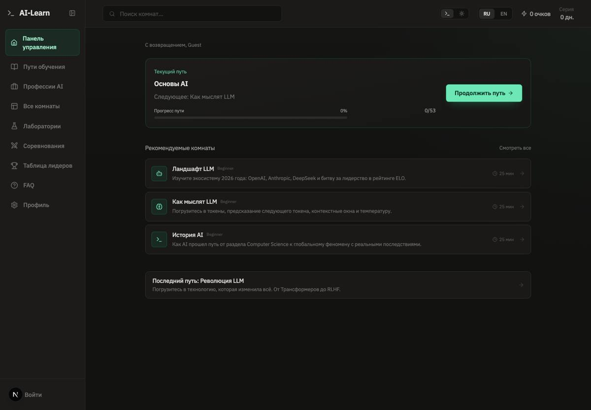
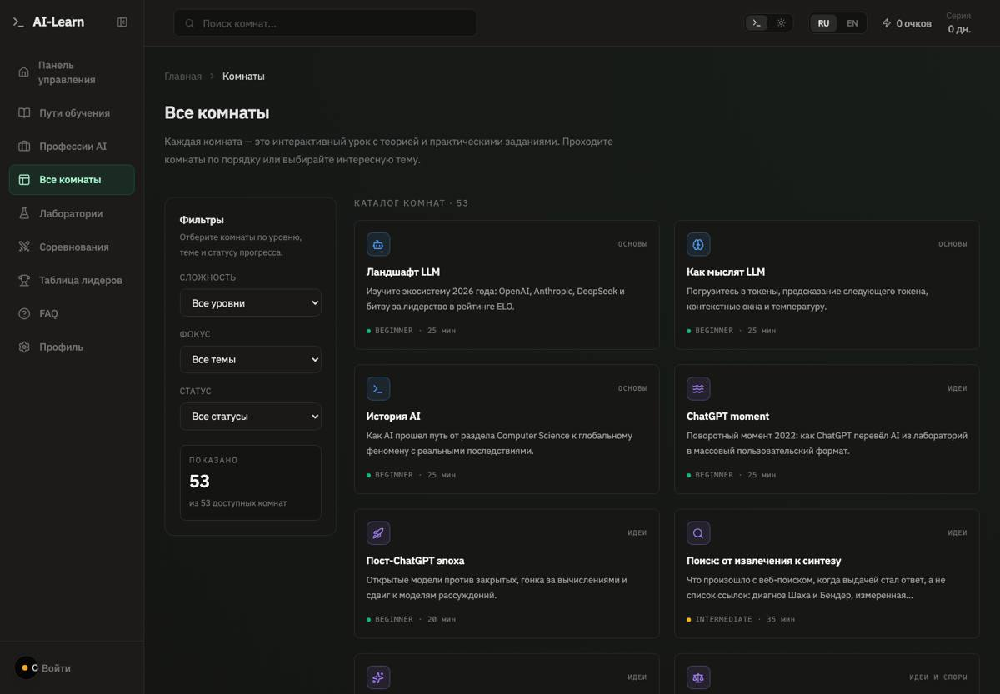
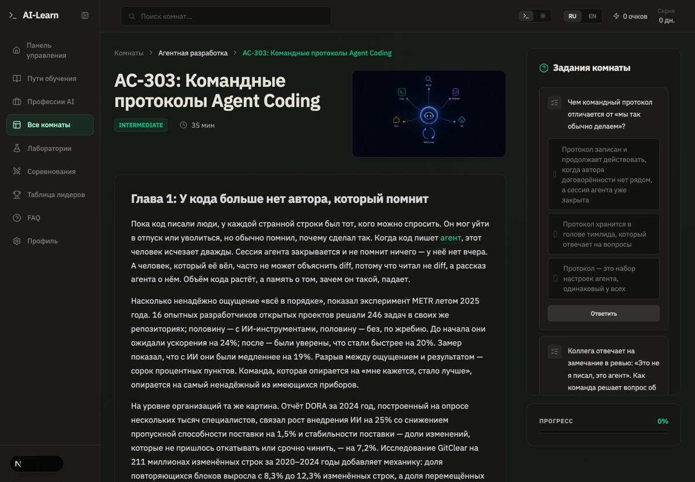
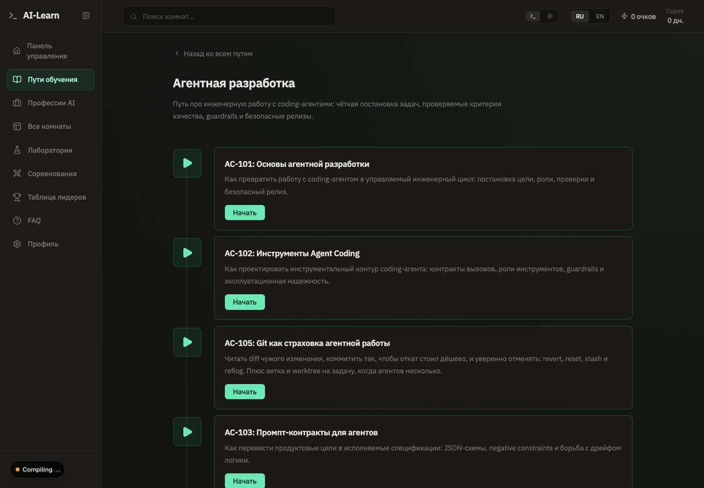

Развилка 6 · структура и плотность страниц · открыта 03.09.2026
Референсы AI-Learn
Владелец: «мне больше не нравится текущий дизайн» — не тон и не цвет, а структура страниц и плотность. Направление выбрано: тёмное, но тихое техническое (Linear, Vercel, HTB Academy). Здесь — 17 реальных снимков (headless Chrome, 1440 px, 03.09.2026), у каждого что взять, что нет и на какую нашу страницу это ложится. Ничего не решено; это материал для следующего шага — макета структуры на реальном контенте.
Что не так сейчас
Четыре главные страницы. Общее у них одно: смысл передаётся рамками. Сайдбар из плиток, карточка на комнату, карточка на задание, карточка на блок теории — и всё это одновременно на одном экране.

сейчас · localhost:3000 · 03.09.2026
Дашборд
Сайдбар из иконочных плиток, «продолжить путь» в рамке, каждая рекомендованная комната — отдельная коробка с иконкой, ещё одна коробка под ними. Четыре уровня рамок на одном экране.

сейчас · localhost:3000 · 03.09.2026
Каталог
Слева боковая панель фильтров в рамке, справа сетка «тихих карточек» — рамка на каждой. Даже после развилки 5 экран остаётся сеткой коробок, а не списком.

сейчас · localhost:3000 · 03.09.2026
Страница комнаты
Теория в карточке-контейнере, справа колонка заданий — каждое в своей карточке с полем ввода. Две вертикальные стопки рамок соревнуются за внимание; строка теории при этом длиннее 90 символов.

сейчас · localhost:3000 · 03.09.2026
Путь
Каждая комната пути — большая коробка с иконкой, заголовком, описанием и зелёной кнопкой. Четыре одинаковых блока на экран, прогресс в них не читается.
Что объединяет выбранное направление
Пять свойств, которые повторяются во всех «тихих тёмных» референсах ниже. Это и есть критерии, по которым потом судить макеты.
Одна поверхность
Фон один; блоки отделяются линией или чуть более светлой заливкой, а не рамкой с радиусом. Рамка остаётся у того, что действительно отдельно: терминал, снимок, поле ввода.
Иерархия шрифтом и воздухом
Два уровня заголовков, колонка чтения 65–70 символов, мета-строки моноширинным мелким. Ни у одного референса нет иконки перед заголовком.
Навигация — текст
Сайдбар — список строк с мелкими заголовками разделов (Linear, Vercel, Claude Docs). Не плитки с иконками и подложками.
Правая колонка — тонкая
«On this page», свойства задачи, вкладки — узкая текстовая колонка, а не вторая стопка карточек рядом с первой.
Один акцент на экран
Цвет несёт состояние (сделано, ошибка, активный пункт) и одну кнопку действия. Всё остальное — оттенки серого с лёгким холодным уклоном.
Референсы
Сначала те, что ложатся прямо на наши страницы; ближе к концу — границы и контрапункты, зафиксированные, чтобы к ним не возвращаться.
Каталог как список строк в две колонки: название («Build your own Shell»), одна строка описания, мелкая мета (число этапов, сложность), иконки языков справа. Ряды разделены едва заметными линиями на общем фоне — рамок нет. Один информационный бар сверху вместо боковой панели фильтров.
Не брать
Затухание нижних рядов — уводит от контента ради эффекта.
Где у нас
/rooms — самый прямой ответ на плотность: ряды вместо плиток, фильтры одной строкой.
Три колонки: слева группированная навигация мелким текстом, в центре колонка чтения с заголовком и абзацем, терминальный блок стоит прямо в потоке текста на ширине чтения, справа узкая колонка с вкладками. Правая колонка — текст и ссылки, а не стопка карточек.
Не брать
Маркетинговый заголовок «Ship anything» и три кнопки в шапке раздела.
Где у нас
Страница комнаты — навигация по главам слева, теория 65–70 символов в строке, задания справа списком, а не карточками.
Навигация слева — просто список текста без иконок и подложек. Плитки «Popular» и «Linear basics»: иконка, заголовок, одна строка — залиты чуть светлее фона, видимой границы нет. Два уровня заголовков и всё.
Не брать
Ничего существенного; это почти эталон тихого тёмного.
Где у нас
Дашборд и страница пути: плитки без рамок, сайдбар как текст.
Внутри снимка — сам интерфейс Linear: левый сайдбар из строк текста, карточка задачи с полями свойств в правой узкой колонке, активность лентой. Это референс для нашей оболочки: пункты меню — строки, а не плитки; свойства — пары «метка · значение».
Не брать
Хиро с двухстрочным лозунгом — не наш жанр.
Где у нас
AppShell и Sidebar; шапка комнаты (сложность · время · путь как пары метка-значение).
Много элементов на экране без ощущения тесноты: «Connect a framework» — сетка маленьких строк (иконка + имя), верхняя навигация по разделам, поиск, панель «AI Prompt / CLI». Плотность достигается мелкими рядами, а не карточками.
Не брать
Панель AI-промпта — у нас нет аналога.
Где у нас
Профессии, глоссарий, список комнат по категориям — мелкие ряды вместо плиток.
Сдержанность: один заголовок, одна кнопка действия, карточки челленджей полупрозрачные по краям, ряд логотипов в монохроме. Единственный цвет — бирюзовая кнопка справа сверху.
Не брать
Антиква в заголовке — не наш голос; это маркетинговый лендинг, а у нас его нет.
Где у нас
Общий тон: один акцент на экран, всё остальное — оттенки серого.
Сайдбар с мелкими заголовками разделов («First steps», «Building with Claude»), узкая колонка чтения, сравнительные таблицы обычным текстом, кнопка «Copy page». Ряд карточек моделей внизу — единственная «витрина» на странице.
Не брать
Светлая тема как основа — направление не выбрано.
Где у нас
Навигация по главам на странице комнаты; таблицы сравнения в теории вместо колонок карточек.
Противоположная крайность: чёрный фон, ни одной рамки, длинная проза со ссылками. Показывает, что «без коробок» тоже может быть плохо — без ритма заголовков и колонки чтения текст становится стеной.
Не брать
Терминальный зелёный логотип, стена текста, зелёные ссылки — это то, от чего уходим.
Где у нас
Напоминание: убирая рамки, нужно добавить типографический ритм, иначе получится это.
Как выглядит плотность, сделанная карточками с градиентами: каждая обложка кричит, счётчики «13 chapters · 149 items · 0%» под каждой. Именно от этого отказались в развилке 5.
Не брать
Всё: градиентные обложки, ряды одинаковых карточек, счётчики без иерархии.
Контрапункт: светлая «учебная» платформа с антиквой, иллюстрацией и двумя кнопками. Зафиксировано, чтобы помнить, от какого направления отказались и почему: дружелюбный тон не вяжется с агентной разработкой и терминалом.
Не брать
Как направление — не выбрано.
Где у нас
—
Типографика — к развилке 2
Отдельная полка: референс не про структуру, а про шрифт. Владелец прислал 05.09.2026 с вопросом «какой шрифт тут используется?». Ответ измерен в DOM, а не на глаз.
Заголовок статьи — Libre Baskerville 700, 32 px. Навигация, подписи авторов, рубрики — Lexend 400, 12–14 px. Roboto объявлен в CSS, но ни один видимый элемент его не использует.
Взять
Разделение ролей: антиква только в одном месте (заголовок), всё остальное — гротеск. У нас для этого уже есть отдельные токены --font-ui и --font-reading.
Не брать
Саму антикву: у Libre Baskerville на Google Fonts нет кириллицы (только latin, latin-ext).
Тело статьи — Lexend 300, 16 px / 28 px (интерлиньяж 1,75), колонка ~746 px. Подзаголовки — Lexend 700, 26,6 px. Подписи к иллюстрациям — Lexend 400, 14 px.
Взять
Ритм: лёгкое начертание и щедрый интерлиньяж делают страницу спокойной без единой рамки. Проверяемая гипотеза для наших абзацев теории — IBM Plex Sans 300 с line-height: 1.75.
Не брать
Lexend как семью: на Google Fonts только latin, latin-ext, vietnamese — на русской по умолчанию платформе каждая кириллическая буква упадёт в системный шрифт. Строка ~90 символов — длиннее нашей нормы 65–70.
Где у нас
Развилка 2a в DESIGN_FORKS.md — записано как «заблокировано — нет кириллицы», с кандидатами на лёгкий гротеск с кириллицей (Golos Text, PT Sans, Manrope).
Как это ложится на наши страницы
Рабочая гипотеза для макета, не решение. Каждая строка опирается на конкретный референс выше.
Страница
Сейчас
Гипотеза
Референс
Оболочка (сайдбар)
плитки с иконками
список строк текста с мелкими заголовками разделов; активный пункт — цветом текста
Linear (интерфейс), Vercel Docs
/rooms
боковая панель фильтров + сетка карточек
ряды в две колонки: название, одна строка, моно-мета; фильтры одной строкой сверху
CodeCrafters — каталог
Страница комнаты
теория в контейнере + колонка карточек заданий
три колонки: главы слева, чтение 68ch в центре, справа оглавление + задания списком; задание раскрывается по месту
Vercel Docs, Resend Docs, Claude Docs
Путь
большие коробки с кнопкой
вертикальный список этапов с одной линией прогресса; суммарное время и «пройти первую комнату» наверху
CodeCrafters, Frontend Masters, Boot.dev
Дашборд
рамка на каждый блок
одна строка «продолжить», под ней плитки без рамок и список ссылок
Linear Docs, Stripe Docs
Следующий шаг
Так же, как для развилок 1, 4 и 5: собрать docs/structure-picker.html с двумя-тремя вариантами страницы комнаты на реальном контенте AC-303 (текущая; трёхколонка по Vercel; двухколонка с заданиями внутри потока), в обеих темах и на 375 px — и судить по глазу, а не по описанию.
Записи: развилка 6 открыта в docs/DESIGN_FORKS.md; референсы добавлены в docs/REFERENCES.md.